Cutroom собирает черновой монтаж из ваших дублей и запускается ярлыком с рабочего стола. Он сам расшифровывает речь, находит ракурсы одного дубля, а ИИ-монтажёр предлагает план и режет строго между словами. Последнее слово за вами: пока вы не нажали «Утвердить», ничего не режется.
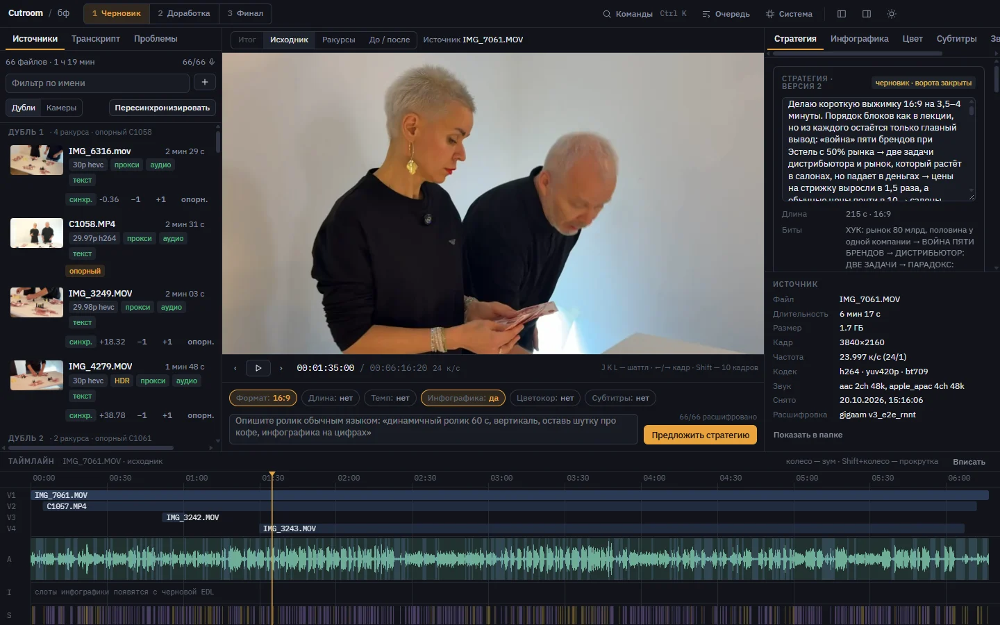
Дважды щёлкните ярлык Cutroom на рабочем столе или найдите его в меню «Пуск». Окно открывается сразу, а за несколько секунд Cutroom сам поднимает всё нужное: обработку видео и связь с Claude, через которую работают агенты-монтажёры. Ничего запускать вручную не нужно.
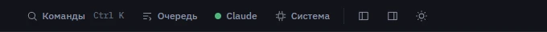
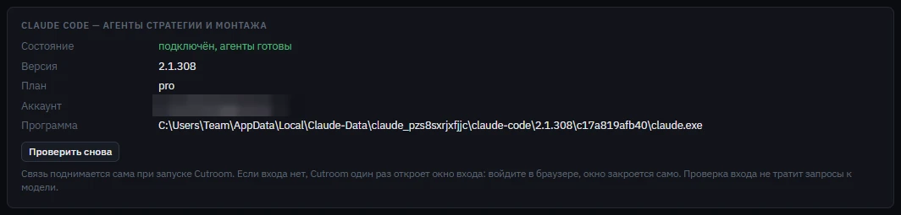
Если входа нет, Cutroom при запуске один раз сам откроет окно входа. Войти нужно только один раз на этом компьютере: дальше связь поднимается сама. Проверка входа не тратит лимиты Claude.
Установщик — небольшой архив Cutroom-…-setup.zip. Распакуйте его и запустите «Установить Cutroom.cmd»: права администратора не нужны, ярлык появится на рабочем столе. Если Windows предупредит о неизвестном издателе — «Подробнее» → «Выполнить в любом случае».
При первом запуске Cutroom сам скачает недостающее: Python с модулями (4–5 ГБ с видеокартой NVIDIA, около 1 ГБ без неё), программу обработки видео и модель распознавания речи. Это делается один раз. Окно можно свернуть, а если связь оборвётся, «Повторить» докачает с места остановки.
Агентам нужно приложение Claude для рабочего стола с выполненным входом — индикатор в шапке подскажет.
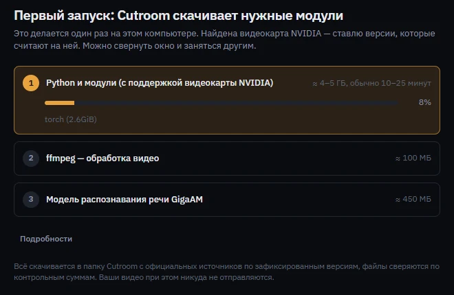
Сложите все дубли и все камеры одной съёмки в одну папку: Sony, iPhone, отдельный звук. Переименовывать и сортировать ничего не нужно. Перетащите папку в окно или нажмите «Выбрать папку». Копии одного файла Cutroom узнает сам и не станет обрабатывать дважды.
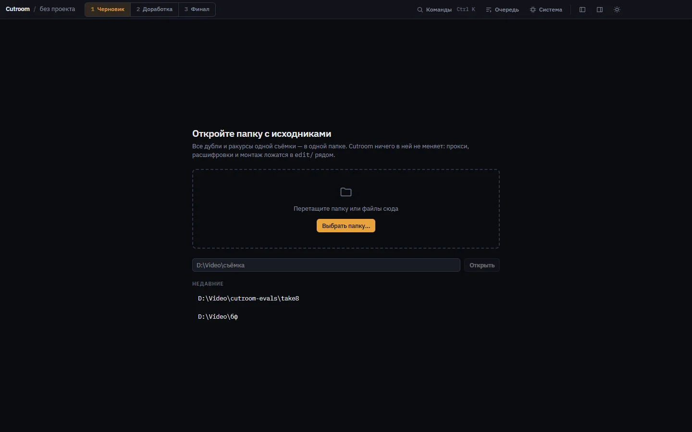
Нажмите «Подготовить … файлов» слева. Cutroom сделает лёгкие копии для мгновенной перемотки, вынет звук и расшифрует речь. На час 4K уходит около 25 минут, работать можно параллельно. У каждого файла загораются отметки:
прокси копия для просмотра готова аудио звук вынут текст речь расшифрована текст 40% идёт сейчас
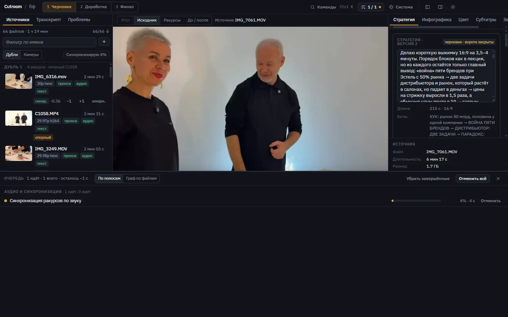
Вкладка «Транскрипт» показывает всё, что сказано в выбранном файле. Клик по слову перематывает плеер, двойной клик сразу играет с этого места. Слова-паразиты Cutroom не вычищает: по ним монтажёр решает, где резать.
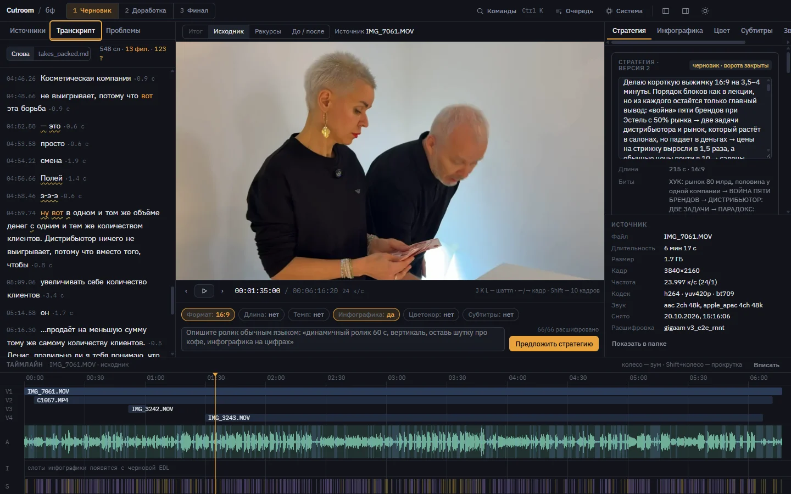
Нажмите «Синхронизировать ракурсы». Cutroom сравнит звук всех камер и сгруппирует их по дублям. Режим плеера «Ракурсы» показывает один и тот же момент со всех камер.
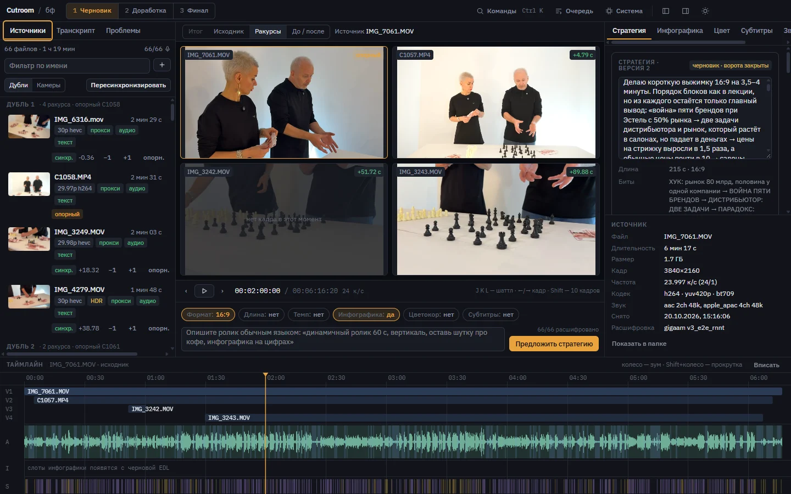
Внизу под плеером напишите задачу так, как сказали бы монтажёру. Кнопки над полем (формат, длина, темп, графика) только подсказывают, главное — текст. Нажмите «Предложить стратегию»: через 2–3 минуты справа появится план в 4–8 предложениях.
Короткий роликВыжимка на 3–4 минуты для дилеров, только главные выводы. Начни с цифры про рынок, закончи вопросом.
ШортсВертикальный ролик 60 секунд, живой темп. Обязательно оставь шутку про кофе, убери всё про цены.
Полная записьЛекция целиком, 10–12 минут. Убери разговоры на площадке и оговорки, графику дай на цифрах.
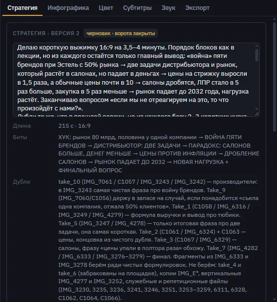
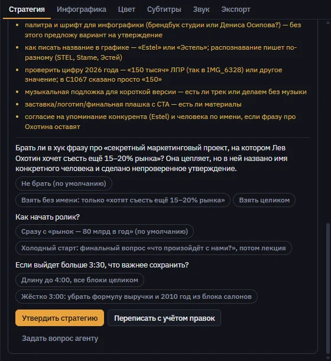
Пункты «Нужно от вас» — то, что агент не будет выдумывать: шрифт и цвета бренда, музыку, подписи спикеров, проверку цифр. Ответьте на них в правках или передайте ответственному.
После утверждения агент-монтажёр выбирает лучшие дубли и собирает их по частям ролика. Плеер переключается в режим «Итог»: смотреть можно сразу, без рендера. Любая правка видна мгновенно и сохраняется версией, поэтому ошибиться не страшно.
Собрать монтаж можно и руками: выделите несколько файлов в списке слева (Ctrl+клик или Shift+клик) и перетащите их на таймлайн — встанут подряд в месте, куда отпустили. Файлы из Проводника тоже можно бросать прямо на таймлайн.
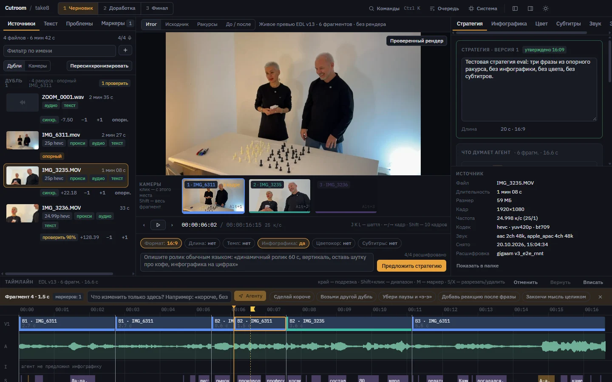
| Хочу | Делаю |
|---|---|
| Другая камера на весь эпизод | Клик по её миниатюре, клавиша A (следующая камера) или Alt+1…4 |
| Другая камера только с этого места | Shift+клик по миниатюре |
| Собрать монтаж из своих файлов | Выделите файлы слева и перетащите на таймлайн |
| Подрезать начало или конец | Тяните край фрагмента на таймлайне — он встанет между словами |
| Разрезать или удалить | S — разрезать в точке плеера, X — удалить выбранный фрагмент |
Ручные правки — камера, цвет, удаление — относятся к выбранному эпизоду, а не к тому месту, где стоит бегунок. Над таймлайном видно, куда пойдёт правка: «правки → эпизод 3». Ничего не выбрано — правка пойдёт в эпизод под бегунком.
Смотрите черновик и нажимайте M там, где что-то не так: появится маркер, к нему можно написать, что исправить. Маркер привязан к записи и не потеряется, даже если монтаж перестроится. Чтобы попросить агента переделать только часть ролика, выделите её на таймлайне: клик по фрагменту, затем Shift+клик по последнему.
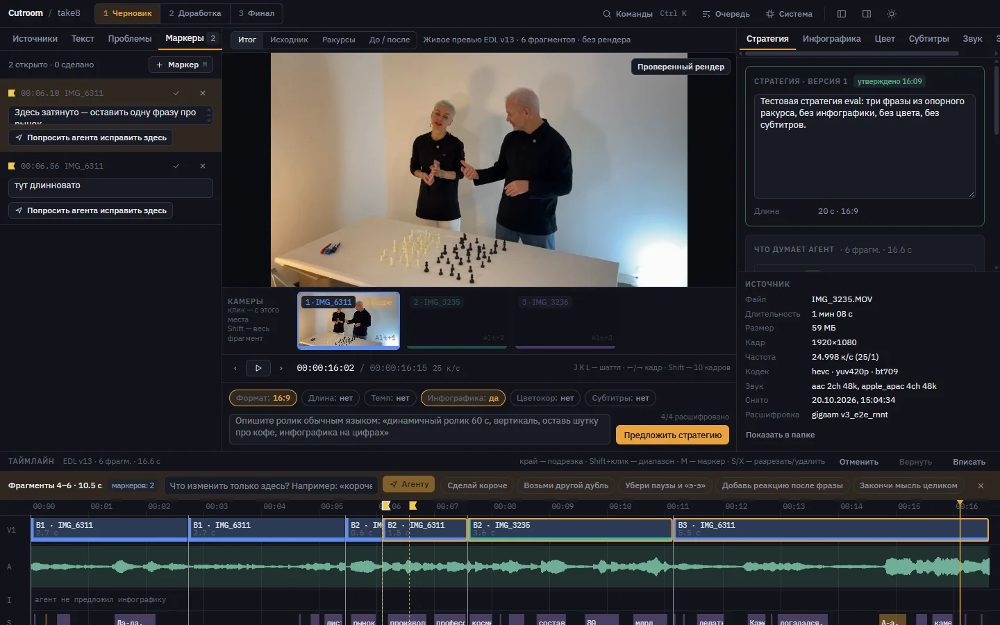
Агент меняет только выделенный кусок, остальной монтаж не трогает. Обычно ответ приходит за полминуты. Не понравилось — Ctrl+Z.
Вкладка «Звук» справа. Если на съёмке писали петличку или рекордер, положите его файл в ту же папку: Cutroom сам найдёт его по звуку и поставит в монтаж вместо микрофонов камер. Губы и голос совпадут точнее кадра.
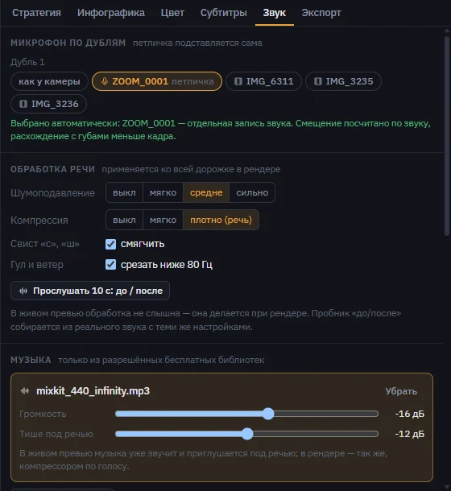
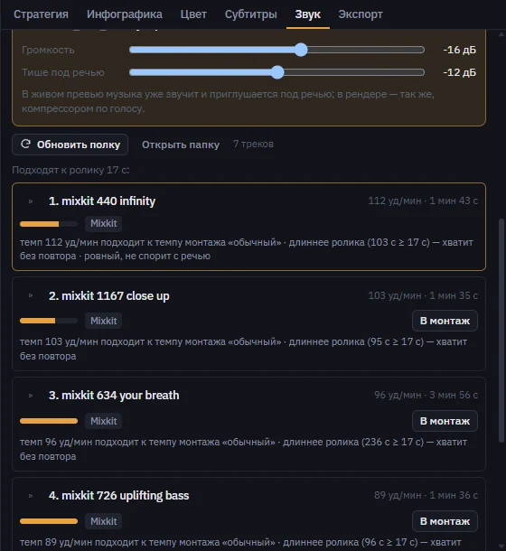
Музыку Cutroom сам не скачивает. Скачайте треки с разрешённых сайтов (Mixkit, Pixabay Music, YouTube Audio Library, Free Music Archive, Uppbeat; ссылки и условия — внизу вкладки) и положите их в папку музыки. Трек без указанной библиотеки помечается «источник не указан»: до финала уточните, откуда он.
Вкладка «Цвет» справа. Выберите эпизод на таймлайне и нажмите готовую настройку или подвиньте ползунки — цвет поменяется только у него. Чтобы задать цвет всему ролику, нажмите «Ко всему ролику». Свой цвет эпизода всегда важнее общего.
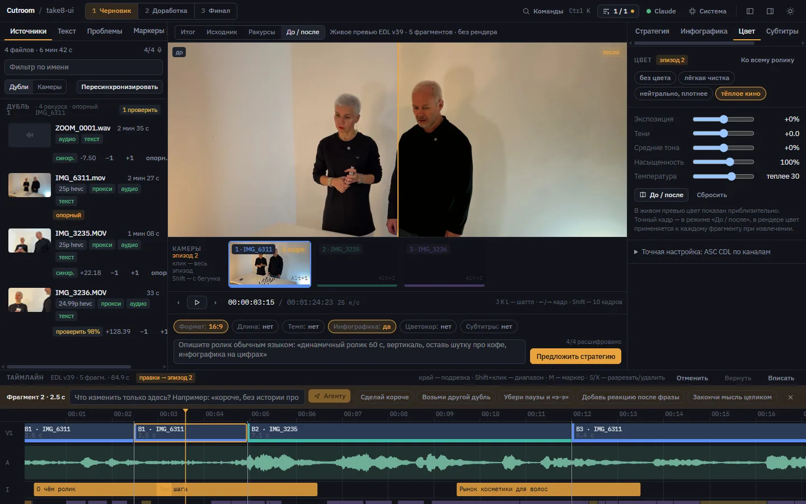
В «Итоге» цвет показан приблизительно, чтобы плеер не тормозил. Точно — в режиме «До / после» и в готовом рендере.
Места под инфографику агент-монтажёр отмечает сам — это плашки на дорожке I таймлайна. Добавить своё место можно двойным щелчком по дорожке. Во вкладке «Инфографика» нажмите «Построить все»: каждую карточку строит отдельный агент, все одновременно, примерно за полминуты. Цифры агент берёт только из слов спикера и не придумывает.
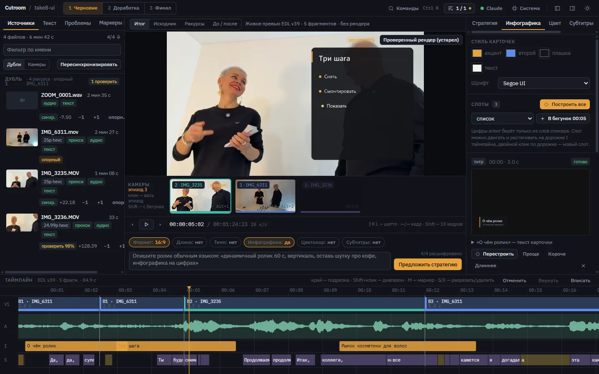
Перед утверждением напишите в задаче, где нужна графика: «инфографика на цифрах рынка». Агент поставит места сам, а карточки повторят цвета и шрифт, выбранные в «Стиле карточек».
| Клавиша | Что делает |
|---|---|
| Пробел | Играть / пауза |
| J K L | Назад / стоп / вперёд (нажмите L ещё раз — быстрее) |
| ← → | На кадр назад / вперёд, с Shift — на 10 кадров |
| M | Поставить маркер в точке плеера и написать заметку |
| A / Alt+1…4 | Следующая камера / камера по номеру с этого места (в «Итоге») |
| Shift+клик | Выделить несколько фрагментов подряд, чтобы попросить агента |
| Esc | Снять выделение |
| S | Разрезать фрагмент в точке плеера (только в «Итоге») |
| X | Удалить выбранный фрагмент |
| Ctrl+Z / Shift+Ctrl+Z | Отменить / вернуть правку |
| Ctrl+Enter | Предложить стратегию |
| Ctrl+K | Поиск команд |
| ` | Открыть или закрыть очередь |
| Что видите | Что делать |
|---|---|
| «Прокси ещё готовится» | Подождите: файл стоит в очереди. Сколько осталось, видно в очереди. |
| В шапке жёлтое «Войти в Claude» | Нажмите его, войдите в аккаунт Claude в открывшемся браузере. Индикатор станет зелёным сам, затем нажмите «Повторить» у остановившейся задачи. |
| В шапке красное «Claude не найден» | На компьютере нет приложения Claude для рабочего стола или оно не запускалось ни разу. Установите и откройте его один раз, потом перезапустите Cutroom. |
| Ярлык Cutroom не запускается | Появится окно с причиной. Чаще всего папку Cutroom переместили: ярлык ждёт её в D:\Video\cutroom. Сообщите ответственному. |
| Камера попала в «Без пары» | У неё не было звука, или она снимала в другое время. Её можно использовать как отдельный кадр. |
| У ракурса стоит «проверить» | Откройте «Ракурсы» и сравните губы и руки. Если видно расхождение, сдвиньте камеру кнопками −1 / +1. |
| План не нравится | «Переписать с учётом правок» и пара фраз, что поменять. Старая версия не теряется. |
| Петличка не подставилась | Сведите ракурсы заново («Пересинхронизировать»). Если рекордер писал отдельно от всех камер по времени, пары не будет — выберите микрофон вручную во вкладке «Звук». |
| Агент поправил не то | Ctrl+Z, затем уточните просьбу: что именно оставить или убрать. |
| Испортили монтаж правкой | Ctrl+Z или «Отменить» над таймлайном. |
| Рендер пишет, что файла нет | Исходник переложили в другую папку. Cutroom сам ищет его по имени и размеру внутри папки проекта. Если не нашёл — верните файл или положите его в папку проекта, затем снова нажмите «Проверенный рендер». |
| У карточки «прервано» | Программу закрыли, пока агент строил карточку. Нажмите «Перестроить». |
| В карточке не та цифра | Раскройте «текст карточки» и поправьте руками, или «Перестроить» с уточнением в задаче. Агент берёт цифры только из речи: если спикер их не называл, он поставит список или титр. |
| Красная строка в очереди | Под задачей написано, что случилось. Нажмите «Повторить»; если не помогло, пришлите текст ошибки. |